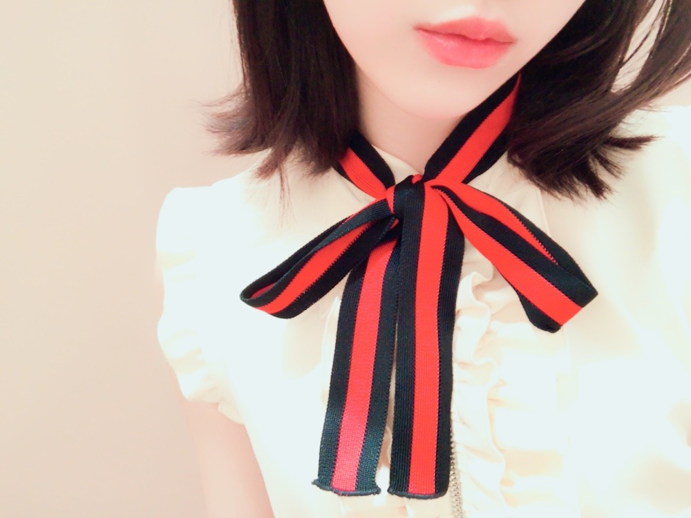
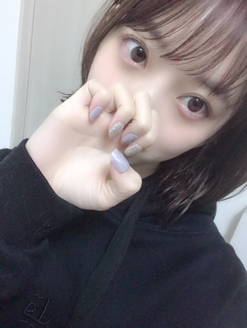
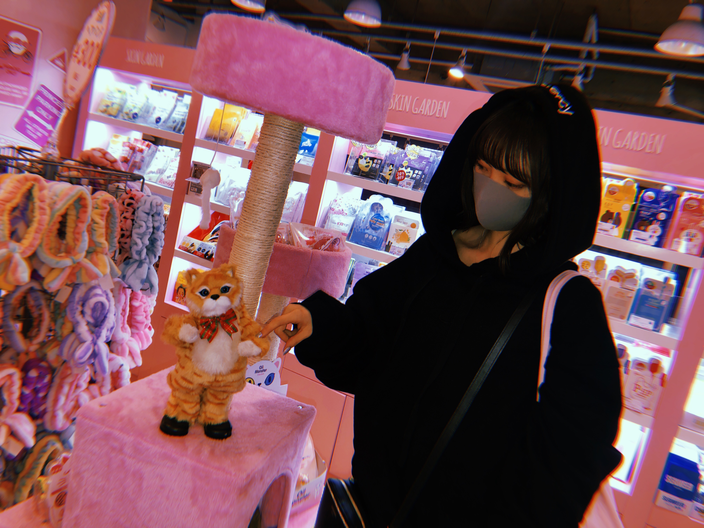

2019/0414Sunちょきちょきしたよ
と、言っても前髪を切っただけです！が
髪色を、暗めにしました〜
名前は
#kittengrey だそうです☺︎
初めてグレー系にしました

子猫ちゃん色なんだって✨
ちょっとブルーも入ってて本当に猫みたいな髪色！
猫は詳しくないけどスコティッシュとノルウェージャンフォレストキャットがかわいいなあって思います
ツンデレなところも猫の魅力ですよね
ツンデレなところも猫の魅力ですよね
犬は甘々さんだからそこも可愛いし
結局みんな違ってみんな良い...
最近は映画ハロウィンを公開日に母と観に行ってきました！！ずっと楽しみにしてた！ブギーマン！
カメラアングルと音が絶妙で
最近は映画ハロウィンを公開日に母と観に行ってきました！！ずっと楽しみにしてた！ブギーマン！
カメラアングルと音が絶妙で
終始ハラハラドキドキしてました
強い女性ってホラー映画に時々出てくるけどめちゃくちゃかっこいいんですよ...
子供や自分を守る為に強くあろうとする姿にハッとさせられます
私の人生テーマの1つに
強い女性になること
があるので。頑張ります。いろんな意味での強さを身につけたいな
強い女性ってホラー映画に時々出てくるけどめちゃくちゃかっこいいんですよ...
子供や自分を守る為に強くあろうとする姿にハッとさせられます
私の人生テーマの1つに
強い女性になること
があるので。頑張ります。いろんな意味での強さを身につけたいな

去年の秋かな？夏前かな？の写真なのですが
これくらいまで地毛で伸ばしたい気分☺︎
そしてホットギミック ガールミーツボーイ
の取材が先日ありました！
久しぶりに亮輝、初、梓、凌 4人集まったけど相変わらず和気藹々と楽しい時間だったなぁ✨
早く皆さんに映画を観ていただきたいです
そして公式Twitter
も、是非フォローよろしくです
オフショットやらいろんな情報がこれから投稿されていきます！
フォロワーさんが増えると良いことがあるかも...？
お楽しみに☺︎

ネイルチップが最近はお気に入り！
これは新大久保で買いました〜ラメ好き
犬飼ってる家あるあるだと思うのですが、パーカー毛だらけになりませんか？？？
わたし何回コロコロしてもダメ...笑
この写真も若干のプティとニコルの毛が見えます...笑
抜け毛問題...(´ｰ｀)

この猫ちゃんかわいい。笑
dancing〜
でははははは

2019/04/14 12:24


コメント(343)
髪色、コロコロ変えてるね笑
似合ってるけど、髪のケアもお大事に。
ホットギミックの取材、お疲れ様です！
TwitterとInstagram、両方チェックしたよ！
俺はとっくの前からフォローしてます！
フォロワーさんが増えるように宣伝しとくね！
抜け毛問題か笑
まぁしょうがないね笑
前髪切って髪色変えたんだね～
まいやんが言ってたからちょっと影響あったのかなぁ。
ヤフーで記事特集されてたよ～
髪の色とっても似合ってる！暗い色も明るい色もどっちの未央奈も好きだよ！！前髪ぱっつんいいねー！
僕はタイニープードルを飼っているけど、毛はそこまで落ちないかな？たまにすごい落ちている時とかもあるのですが笑
それよりも色々なものを噛んでしまって、クッションなんてすぐにボロボロ 結局可愛いから許していますね笑
最後にホットギミックめっちゃ楽しみにしています！
4枚目の写真でつけてるマスクもグレー系の子猫ちゃん色だし着てる服も黒子猫ちゃん色だし2枚目の写真でしてるリボンなんて赤黒子猫ちゃん色じゃーん！
映画ハロウィン気になるなぁ
ホットギミックの公式フォローしてるよ
何があるんだろうワクワク
これから公開に向けての情報解禁楽しみです
ますます忙しくなりそうだけど体調に気をつけて頑張ってね
前回ブログで紹介してくれたグリーンブック見ました
未央奈さんそこに注目するんだっていう食べ物への独特な視点に笑いながらも、感傷的かつ考えさせられる映画で観れて良かったです✨
ホットギミック楽しみです✨
ホットギミック見に行くよ！
髪めっちゃ似合ってる！
可愛すぎ！
次はまいやんが好きな黒ボブですね
ブログ更新お疲れ様です。
髪色、今のくらいが個人的には好きです。
動物はヒトもそうですが、生きてる以上、毛が抜けるのは仕方がないと思います
映画、楽しみにしております。
では。
だいすき！！！！
ハロウィン近くの映画館でやってるかな？
やってたら観てみますね。
ホットギミックも上映日が近づいて来てますね！
はやく観たいです！
映画絶対見に行きます!!
髪の毛、切ったんだね～！
髪色も毎回、変えてるけど
どれも似合ってるよ～‼
今回のは特に似合ってるで～！
伸ばしていくのもやっぱり
似合うだろうから、期待してるよ～笑
自分も早く、映画みたいよ～！
もうちょっとですね！楽しみにしてるよ～！
堀ちゃんも、新大久保、いくのか～
しっかり、マスクとフードして
会ってみたいけどな～笑
あっ!ネイルもちゃんと似合ってるよ～‼
色も髪色と少しあってていいね!
レコメンも聴いたよ～！
のりさんとのコンビは
やっぱ、最高よ～！
写真、多くて嬉しいよ！
次回の更新も楽しみにしてるよ～！
それでは！
未央奈、今日も一日お疲れさまでした。
髪色変えて、こっちの色も似合ってます。相変わらず可愛くて素敵です。それにしても子猫ちゃん色があるなんて初めて知りました。。。
猫と言えば、いろんな猫種がいて、それぞれ個性も違うんですよ。個人的には黒猫と三毛猫。あとロシアンブルーが好きかな。毛並みがモコモコして高級感のある感じより、シュッとしてスマートな猫ちゃんがいいですね。
それと猫はみんなツンデレじゃないです、ずっと甘えたい猫だっているんです。例えば、シャム猫とか。最初は警戒心が強いんだけど、慣れるとすぐ甘えたがる性格なんです。
犬は甘々なのかな。飼い主さんに忠誠を誓うというか、とにかくお利口で、しっかりもののイメージ。散歩に連れていくのは大変だけど、一緒に生活してて楽しそうってイメージがあります。未央奈はニコルくんとプティくんと一緒に生活をしていて楽しそうだし、でも朝早くてしんどそうな感じ…笑
だけど楽しいから、それも許せてしまうのが動物の不思議ですね。
「ホットギミック」の取材が少しずつ出てきましたね。作品を観られる日が来るのを本当に楽しみにしてます。もし、作品を観ることができたのなら、誰よりも早く、一番最初に未央奈に伝えたいです。。。
その時はたくさん映画のことや、未央奈のことで話しちゃうかもだけど、お話し聞いてくれると幸いです…。
それに「ホットギミック」もたくさんの方に観ていただきたいので、自分なりに宣伝していきたいなとも思ってます。微力ながら応援していきますので、今後ともよろしくですm(_ _)m
早く観たいなぁ…
最近はダイエット中ですよね？
27日に「SAPPORO COLLECTION 2019」があるからなのかなとは思うけど。。食べ過ぎず、食べなさ過ぎず。限度は守って食事制限をしていこうね…。食事に限らず、休息も大切に。
その翌日は大阪で握手会ですね。
いっぱい話したいことがあるので、聞いていただけたらなと思います。よろしくですm(_ _)m
ではでは、ねこでした。
めっちゃ犬の毛つくのわかりますw
いつ見てもかわいいですねw
体調に気をつけて頑張ってください！！
ブログ更新ありがとう。コメントが追い付かなくてごめんなさい。
Blt グラフ、セブンネットで受け取りました。カワイイし、綺麗だし、色っぽいし最高でした。インタビューも確り読ませてもらい、益々応援したくなりました‼
このブログの一枚目の写真、私はとっても好きです。清楚感、透明感があり、髪色も似合っていて素晴らしい。
アルバムのイベントやシングルの活動、更にはホットギミックの宣伝など多忙でしょうが、良い体調で過ごしてくださいね。
乃木坂46と頑張ってるcuteでsmartな未央奈ちゃんを応援しています。
髪色もちょうど良き良き！！！
堀ちゃん今でも十分強いと思うけど！！！笑
ホットギミックわかってるーーー！！！
新大久保って韓国系？
ハロウィンは見てないけど
コナン見たよ〜
ありがとうございます！
みおなちゃん可愛すぎです！
今頑張って前髪伸ばしてるんですけど
みおなちゃんの写真見たら
切りたくなっちゃうじゃないですかー笑
ホットギミック楽しみにしてます！！
みおなちゃん大好き♡
子猫みおなちゃんも大好きっす！
ももか No.12
好きだよ～！
御疲れ様でした！
未央奈がめっちゃ可愛い！
何時も頑張ってね、
常に必ずしても応援しています…
ずっと大好き！
フード被ってるのかわいい♡
堀ちゃん、髪色いろんなん合うんやね❗
洋服ともあっとうやん
しつこいけど(笑)個人的にはショートカット好きナンデス(笑)☺
こんなん書いてなんかごめんな～✴
早く伸びたらエエね。
自分の好きなんが一番やから❗
で堀ちゃんホンマに映画好きやね。
もっと感受性豊かになって乃木坂でも更に頑張ってほしいです‼
あとあらためて同期会の良いね。
かりんちゃん、絢音ちゃんブログ見て思いました
ホットギミック仲間も大切にね。
ではではまたね。
体調には気をつけてくださいね☺
ほなね、堀ちゃん❗
足細くする方法知りたいです!
黒っぽい髪色もめっちゃ似合う！可愛い！
ネイルもオシャレな未央奈ちゃんだから、
めっちゃ似合う！！！
もうしばらくボブでいてね～～～可愛いから！
子猫ちゃん
母娘でホラー映画鑑賞(>.<)ゴイスー
自分もホラー好きだから観てこよぉっと(^^ゞ
自分もハロウィン見に行った
ローリーとマイケルの死闘はハラハラとドキドキした
黒パーカーヤバイ
やっぱかわいい
推し変できねー
まいやん先輩が言ってたボブも是非見てみたいです！
と言っても髪はそう簡単には切れないでしょうけど…
堀ちゃんは何しても可愛いです
写真を見て新大久保ってわかったよ☆
会社の事業所があるし、月に数回は
今でも行っているからね〜
たしか、若い女性が行く街で
渋谷、原宿、新大久保が
ベスト3になっているとか〜
(不確かな情報。。)
みおは、色々なパーカーを持っているね
気負わなくていいのかなぁ〜
色々と似合うからいいよね☆
あ、ダイエットなんだけど、
やっぱ、食べる量を減らすと、
身体が脂肪を貯めようとして
結果的に代謝が悪くなり
リバウンドしたりと良い事がないんだよね〜
やはり、身体を動かして代謝を良くしながら、
しっかりと食事量を保ち
栄養バランスを保つしかないよね☆
では、ちょっと仕事してくるね〜
今日は、昼にはプリンシパルに行って来たよ！
4期生も殻を破ろうともがいているね〜
みおも応援に行ってあげてね！！
いい刺激になると思うよん♪
ナナマルサンバツも行く予定だよん♪
あと、
仕事で休みがとれたら
札幌コレクションに応援に行くからね！
チケット、ホテル、飛行機は
既におさえてあるよ〜
でも、仕事が入ったら全てがパァーでんねん。。
では、祈っていてね〜☆
わたる⊿
選抜発表だね。未央奈センター祈願しときます！
カワイイなぁ
ホットギミック楽しみ！
女優未央奈、楽しみ
新しい髪の色、似合ってて可愛い～＼(^o^)／
先週の「のぎおび」で、まいやんも言ってたけど、黒系の髪の色が、みおなは凄く似合うよね(^_^)
肌が白いから、より似合うんだろうね(^_^)
と言っても、明るい色も似合うけどね！
これからも色々なみおなを見せてね、楽しみにしてるよ＼(^o^)／
それじゃ、またね(^o^)／
コメントする